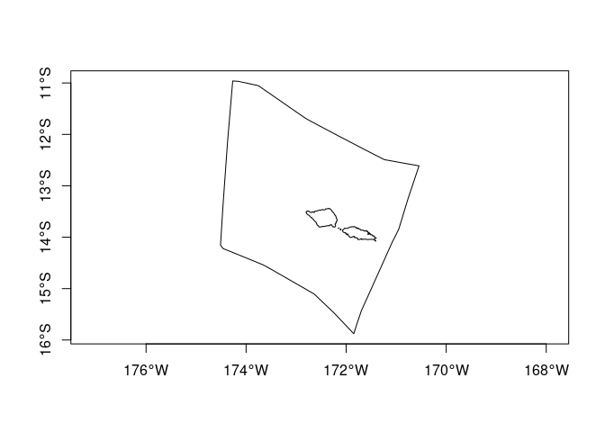
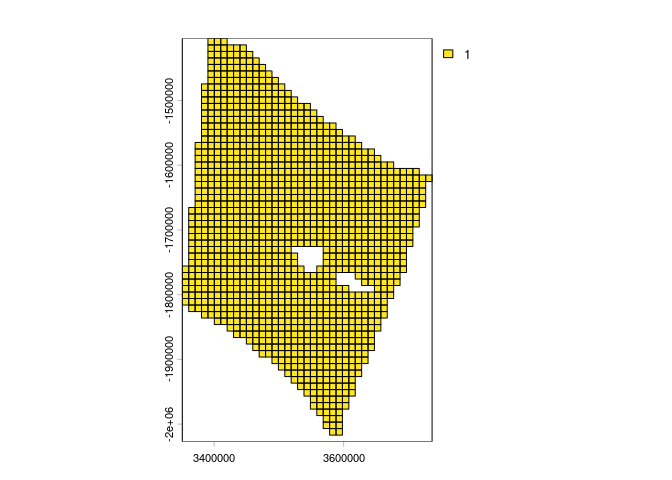
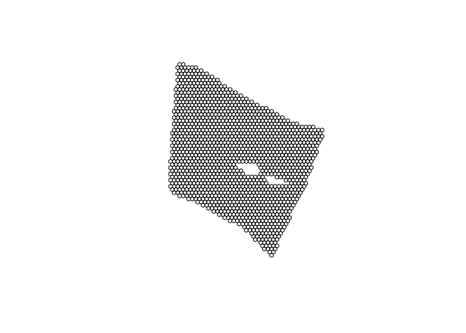
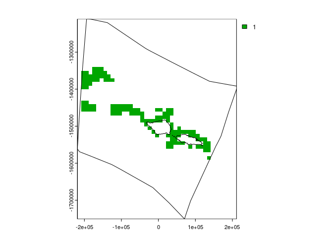
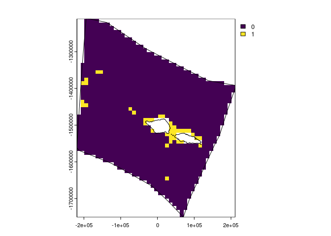
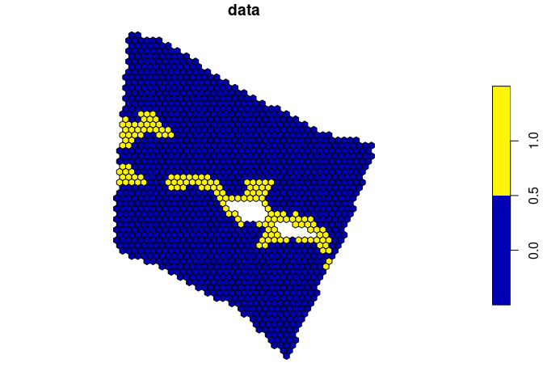
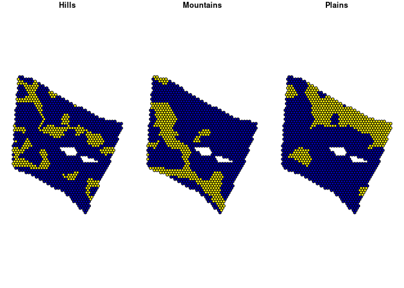
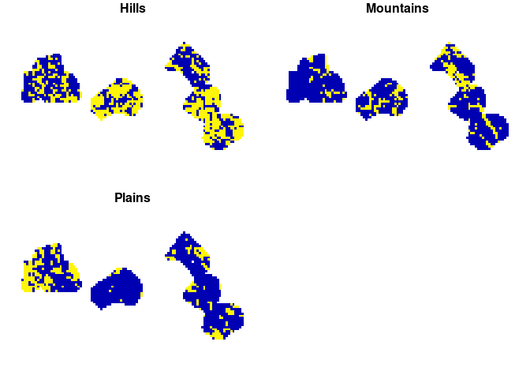
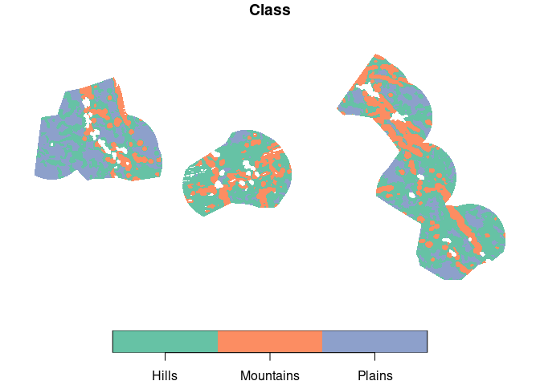
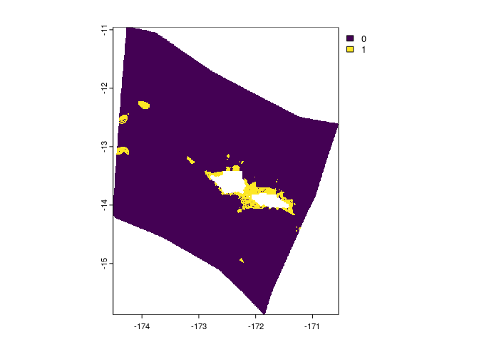

spatialgridr provides functions for gridding spatial data; i.e. taking raw spatial data and getting that data into a grid.
This package is still under development. Feel free to submit an issue with bugs or suggestions.
Installation
You can install the development version of spatialgridr from GitHub with:
# install.packages("remotes")
remotes::install_github("emlab-ucsb/spatialgridr")spatialgridr has three functions:
-
get_boundary(): retrieves the boundaries for a marine or terrestrial area, such as a country or Exclusive Economic Zone (EEZ) -
get_grid(): creates a spatial grid -
get_data_in_grid(): grids spatial data; can also be used to crop/ intersect a polygon with data
Examples
This shows how to obtain a spatial grid and grid some data using that grid.
#load the package
library(spatialgridr)Get a boundary
We can obtain grids in raster (terra::rast) or vector (sf) format. First we need a polygon that we want to create a grid for. We can retrieve boundaries for countries, Exclusive Economic Zones (EEZs), oceans, and several other jurisdiction types using get_boundary(). In this example we will get the EEZ for the Pacific island of Samoa.
#get Samoa's EEZ
samoa_eez <- get_boundary(name = "Samoa")
plot(samoa_eez["geometry"], axes = TRUE)
Get a grid
We also need to provide a suitable projection for the area we are interested in, https://projectionwizard.org is useful for this purpose. For spatial planning, equal area projections are normally best.
#equal area projection for Samoa obtained from https://projectionwizard.org
samoa_projection <- '+proj=laea +lon_0=-172.5 +lat_0=0 +datum=WGS84 +units=m +no_defs'
# Create a raster grid with 10km sized cells
samoa_grid <- get_grid(boundary = samoa_eez, resolution = 10000, crs = samoa_projection)
#plot the grid
terra::plot(samoa_grid)
terra::lines(terra::as.polygons(samoa_grid, dissolve = FALSE)) #add the outlines of each cell
To obtain a grid in sf format we can use arguments option = "sf_square" or option = "sf_hex" in get_grid to specify square or hexagonal cells. We will create and plot a hexagonal grid with 10 km wide cells.
samoa_grid_sf <- get_grid(boundary = samoa_eez, resolution = 10000, crs = samoa_projection, output = "sf_hex")
plot(samoa_grid_sf)
Grid data
Now we can grid some data. Data can be in raster (terra::rast()) or sf format. Here’s an example using a global map of seafloor ridges which is in sf format:
# ridges data for area of Pacific
ridges <- readRDS(system.file("extdata", "ridges.rds", package = "spatialgridr"))
#grid the data
ridges_gridded <- get_data_in_grid(spatial_grid = samoa_grid, dat = ridges)
#plot
terra::plot(ridges_gridded)
terra::lines(samoa_eez |> sf::st_transform(crs = samoa_projection)) #add Samoa's EEZ
And another example using raster data, in this case global cold water coral distribution data which has been pre-cropped to the Pacific
#load cold water coral data
cold_coral <- terra::rast(system.file("extdata", "cold_coral.tif", package = "spatialgridr"))
#grid the data
coral_gridded <- get_data_in_grid(spatial_grid = samoa_grid, dat = cold_coral)
#plot
terra::plot(coral_gridded)
terra::lines(samoa_eez |> sf::st_transform(crs = samoa_projection)) #add Samoa's EEZ
We can also use the sf grid we created to return gridded data in sf format:
#grid the data
ridges_gridded_sf <- get_data_in_grid(spatial_grid = samoa_grid_sf, dat = ridges)
#plot
plot(ridges_gridded_sf)
We can also grid sf data that contains multiple data features, such as habitat types. To do this, we provide the name of the column that as the feature_names argument in get_data_data_in_grid(). This creates a multi-layer grid. For raster data this means multiple raster layers and for sf grids multi-column objects. Here’s an example using sf data that classifies the worlds deep oceans (Abyssal plains) into 3 categories:
#load the data
abyssal_plains <- system.file("extdata", "abyssal_plains.rds", package = "spatialgridr") |>
readRDS()
#grid the data
abyssal_plains_sf <- get_data_in_grid(spatial_grid = samoa_grid_sf, dat = abyssal_plains, feature_names = "Class")
#plot
plot(abyssal_plains_sf)
spatialgridr also works with grids that cross the antimeridian (international date line). You can set antimeridian = TRUE in get_data_in_grid if you know you are using a grid that crosses the antimeridian, or if antimeridian = NULL (the default option), the function will automatically determine if the grid crosses the antimeridian. Here’s an example using Kiribati’s EEZ as the grid area.
#load the Kiribati EEZ polygon
kir_eez <- get_boundary(name = "Kiribati", country_type = "sovereign")
#create a grid for the Kiribati EEZ - Equal area projection obtained from https://projectionwizard.org
kir_grid <- get_grid(boundary = kir_eez, resolution = 50000, crs = '+proj=laea +lon_0=-159.609375 +lat_0=0 +datum=WGS84 +units=m +no_defs', output = "sf_square")
#get abyssal plains classification for Kiribati grid
kir_abyssal_plains <- get_data_in_grid(spatial_grid = kir_grid, dat = abyssal_plains, feature_names = "Class")
#> Spherical geometry (s2) switched off
#> although coordinates are longitude/latitude, st_intersection assumes that they
#> are planar
#> Warning: attribute variables are assumed to be spatially constant throughout
#> all geometries
#> Spherical geometry (s2) switched on
#> Warning: attribute variables are assumed to be spatially constant throughout
#> all geometries
#> Warning: attribute variables are assumed to be spatially constant throughout
#> all geometries
#> Warning: attribute variables are assumed to be spatially constant throughout
#> all geometries
#> Warning: attribute variables are assumed to be spatially constant throughout
#> all geometries
#plot
plot(kir_abyssal_plains, border = FALSE)
Get raw data
If you just want to get data for an area, but don’t want to grid it, you can provide an sf polygon to get_data_in_grid() and set raw = TRUE.
kir_abyssal_plains_raw <- get_data_in_grid(spatial_grid = kir_eez, dat = abyssal_plains, raw = TRUE)
#> Warning: attribute variables are assumed to be spatially constant throughout
#> all geometries
#shift longitude to make it easier to view data
plot(kir_abyssal_plains_raw[1] %>% sf::st_shift_longitude(), border = FALSE)
samoa_coral_raw <- get_data_in_grid(spatial_grid = samoa_eez, dat = cold_coral, raw = TRUE)
terra::plot(samoa_coral_raw)